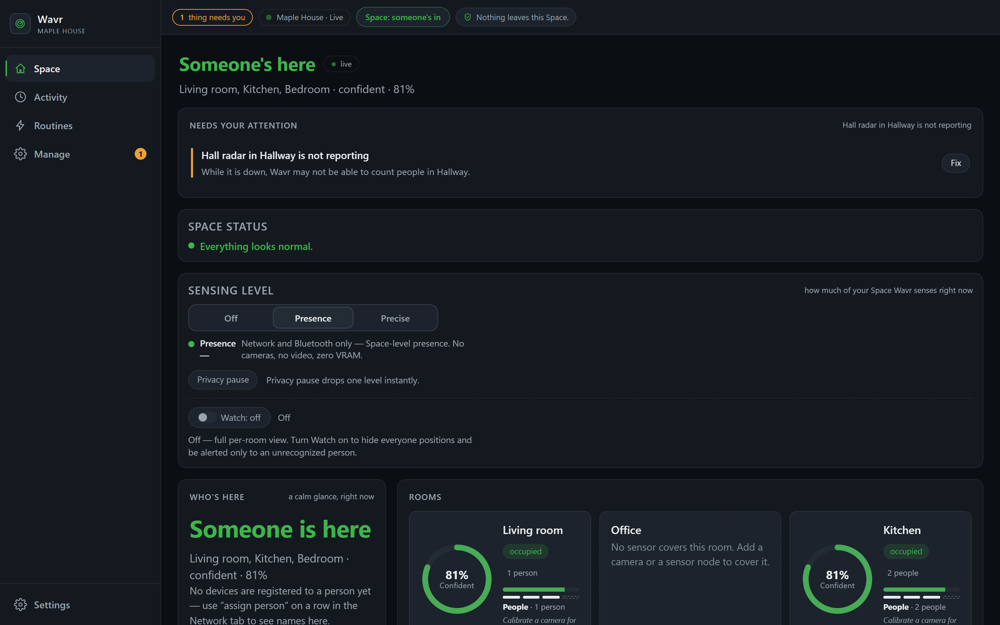
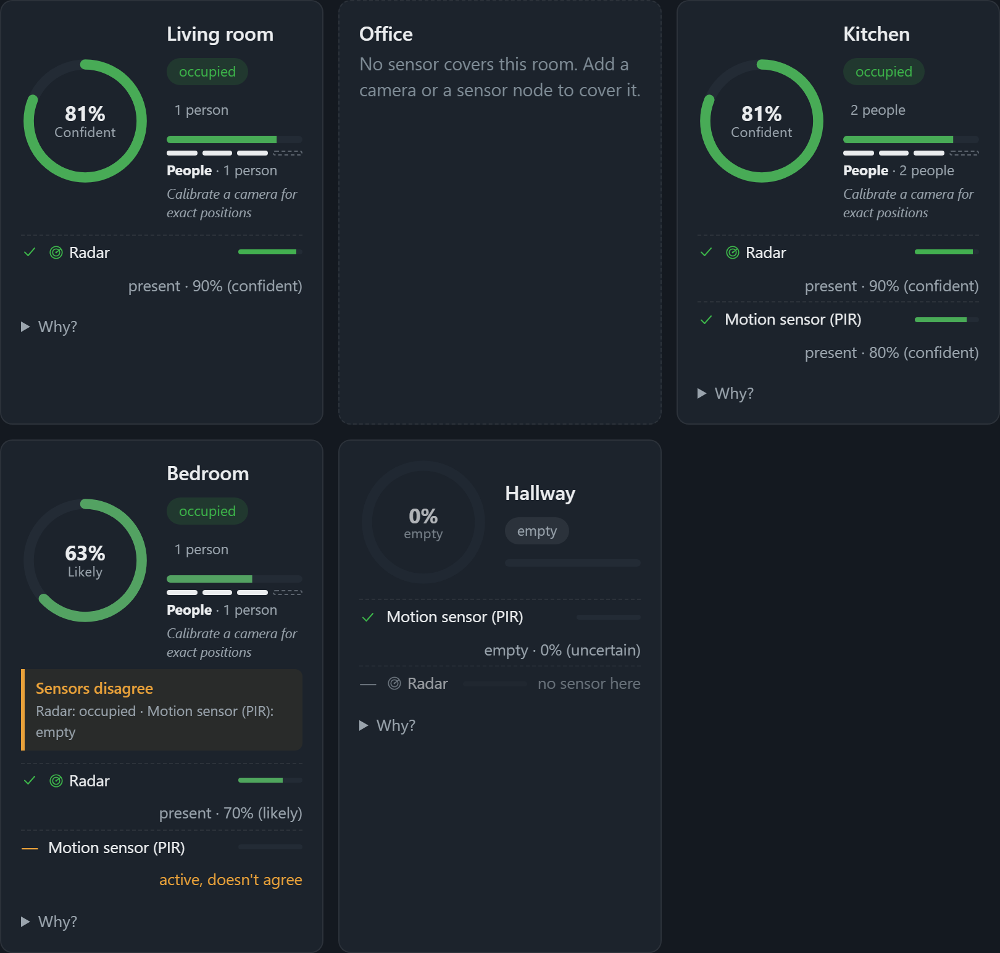

One space. Many sensors. A single, explainable answer.
Your Wi-Fi already knows a little about where people are. So does a camera, or a small radar sensor, if you add one. Wavr is the local software that combines whatever you have into one clear, per-room answer: occupied or not, how sure it is, and why. It runs entirely on hardware you own.
No cloud, no account, no sign-up. Free and open source, AGPL-3.0-or-later. Read the source.

The real dashboard, not a mockup — this Space has a radar and a motion sensor in it. A fresh install starts with your rooms and no sensors yet: what day one actually looks like.
What you would actually use it for
Wavr answers one question — is anyone here, where, and how sure are we — and then lets you act on the answer. Some of these work the day you install it; the rest say what they need.
“Did anyone get home?”
Wavr recognises the phones and laptops on your own Wi-Fi, so it knows when someone arrives or leaves and can tell you. No camera, no sensor, nothing to buy.
“Is the place empty?”
Not “the last device disconnected” — actually empty, with a confidence and the evidence behind it. Wavr can tell you when it becomes empty, or when it has been empty since a time you choose.
“What just joined my Wi-Fi?”
Wavr keeps a list of what it recognises, and tells you about anything it has never seen before. That is a different question from presence, and the same scan answers both.
“Has anyone been in the kitchen today?”
Per-room presence, and a “nobody has moved in here for a while” trigger. This is the shape of checking on someone who lives alone, and it is the reason rooms can be watched without a camera in them.
Lights that don't switch off on someone sitting still
The usual motion sensor forgets you the moment you stop moving. Wavr holds a room occupied on fused evidence and says how sure it is, so what you automate off it is not guessing.
Make something happen
A rule can call a Home Assistant service when a room fills or empties. That connection is opt-in and starts off; without it, Wavr tells you and does not touch anything.
Being told means a message in Wavr, and a desktop notification for the serious ones when you run the desktop shell (in a browser tab there is no OS notification). Pushing alerts to a phone means pointing Wavr at a notification service, which is off until you do.
Your network, as something a program can ask questions about
A router knows MAC addresses. A camera knows pixels. Neither can answer “who is in the kitchen and how sure are you?” — and neither can be asked anything at all by a program you write. Wavr turns the same signals into one local API, and then puts a standard agent interface in front of it.
An agent can ask your Space
Wavr ships a Model Context Protocol server, so any MCP client — your own agent, a local model, an assistant you already use — can ask: which rooms exist, who is where, why Wavr believes that, what is on the network, where the sensors are blind, what happened earlier today, is the Core healthy.
And, if you allow it, do something
The fourteenth tool calls a Home Assistant service. It is inert unless you turn control on, it never drives a device directly — it asks your own Home Assistant to — and the whole chain is off by default. Read is the normal state; acting is a decision you make once, deliberately.
A model that never leaves the building
Wavr's own assistant can point at a language model running on the same computer. Ask it about your Space in your own words, and the question, the answer and the data all stay on hardware you own. Point it at a cloud provider instead if you prefer — Wavr says which of the two you chose, every time.
Deliberately less than Wavr knows
The network inventory an agent can read is coarse on purpose: a device's vendor and kind, never its MAC, hostname, open ports or when it was first seen. Wavr keeps those; the agent surface does not get them. An integration layer that hands over everything it has is a leak with an API.
This is the part that is hardest to
demonstrate on a page and easiest to check in the code: the tool list is in
backend/wavr/mcp.py, and every gate on the one control tool is named in
its own header comment.
One understanding, instead of five separate guesses
This is the shift Wavr makes. Nothing here needs you to know networking, IoT, or sensor fusion. Just look at the difference.
- Your Wi-Fi routerknows 12 devices are connected
- Your phoneknows it's near an access point
- A cameraknows there's motion in frame
- A radar sensorknows a shape is 2m away
- Bluetoothknows a beacon is nearby
Five isolated hunches. None of them talk to each other, and none of them answer "is anyone in the living room?" on their own.
Living room
Occupied92% confidence
- Wi-Fi Agrees
- Camera Agrees
- Radar Agrees
- Bluetooth No reading
One answer, with its evidence attached. The reasoning is always one click away, never a black box.
Built around a Space, not just "your house"
Wavr calls the place you set up a Space, on purpose. Rooms, presence, devices and confidence all attach to whichever one you're running; the model doesn't assume it's a house.
- Home
- Apartment
- Office
- Shop
- Restaurant
- School
- Warehouse
- Hotel room
Privacy is the design, not a settings page
Home and workplace sensing usually means sending a camera feed and network traffic to someone else's cloud. Wavr takes the opposite position: the same sensing techniques, running on a machine you control, with the data staying on it.
The base install never opens a LAN socket. Every path off the box (another device connecting, MQTT to Home Assistant, an AI agent reading state over MCP) is opt-in and starts OFF.
Frames live in RAM only, are never written to disk, and never leave the box. Raw sensing is never written down — frames, pose keypoints and per-person coordinates live in memory only. What reaches the disk is the derived answer (occupancy, a confidence score, the per-source evidence behind it, and the occupancy log) plus the configuration that makes an install work: paired devices and their hashed credentials, people and roles, consent tiers, the house map, cameras, nodes. All of it in a file on your own machine.
Nothing to sign up for, no analytics SDK, no phone-home — the dashboard makes zero external requests, and neither does this website. What Wavr does keep is local administration: people with roles (owner, admin, user, guest), each paired device carrying its own credential, and a separate axis for what job a machine does. Demote somebody and their phone loses access on its next request. It is all in a file on your own disk, and no directory anywhere else knows any of those names exist.
Free and open source, commercial use included. Run a MODIFIED version as a network service and the AGPL asks you to publish those changes; running it unmodified triggers nothing.
Wavr says "I don't know" when it doesn't
A room is never forced into a false "clear" or "occupied." Wavr distinguishes a confirmed-empty room from one with no coverage at all, a sensor that's gone offline, and a reading it isn't confident about, and shows you which.
-
Occupied
Confident evidence someone's there, with the sources behind it.
-
Confirmed empty
Actively monitored right now, and nothing found.
-
Offline
A sensor that should be reporting here has stopped. Flagged, not hidden.
-
No coverage
Nothing is watching this room at all: a gap, never disguised as "empty."
-
Low confidence
A weak or contradicted reading. Shown as uncertain, not rounded up.

One brain, every screen
Wavr is a small family of surfaces around one local fusion engine. Add the ones you need, over the same authenticated, local-only channel.
Desktop
The full dashboard as a native shell, or straight from source in a browser. The machine that runs it is the "Core" for your Space.
Mobile companion
No app-store app needed. Pair a phone or tablet browser to a Core over local HTTPS and add it to the home screen.
Sensor Nodes
A small radar or PIR board that joins Wavr over Wi-Fi with a one-time code. See how it works for what's built and what's still firmware-only.
MCP for agents
A read-only Model Context Protocol server exposes room state to your own agents, with an opt-in, gated Home Assistant control tool.
Ready when you are
Zero hardware needed to try the idea, and a real path to an always-on hub for your Space when you want one.